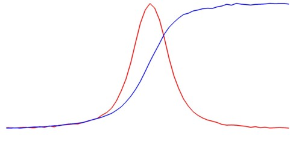
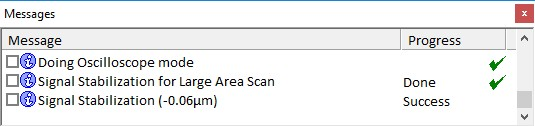
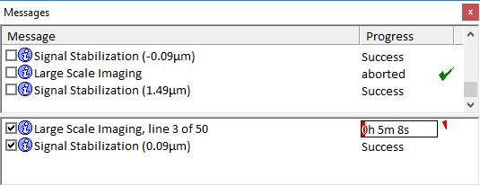

步骤
定义图像扫描或大面积扫描的测量参数（至少包括几何结构和积分时间）。
选择适当的
稳定模式
（峰值模式用于仅在表面产生信号的样品，或正边沿模式用于在表面下也产生信号的样品（图1））

图1：硅（红色）和胶带（蓝色）的深度轮廓
选择
补偿执行器
。如有可能，使用扫描台以获得最佳效果，因为其在小步长下具有更好的线性度。
使用
监听稳定
或输入坐标来定义参考点。（参考
提示
要点a至f）
对于
监听掩膜
，选择
多个
并在硬件光谱窗口中标记光谱区域。（如有必要，启动
示波器
。）（之后切换回
从不
。）
点击
启动稳定
以在
消息窗口
中检查性能和结果。（在此之前将光路切换至拉曼。）
如果稳定失败，使用
示波器
聚焦到最大光谱强度（峰值模式）或一半最大强度（边沿模式）。（需选择
用户z
（
U:
）
。）
重复点击
启动稳定
数次，直到
消息窗口
中显示的稳定高度接近零（图2）。

图2：消息窗口
使用以下两种选项之一调整测量焦点：
在测量区域内优化焦点，并将
中心（Z）
值更改为当前软件z值
或
在测量区域中心优化焦点，然后点击
当前位置设为中心
使用形貌校正（
手动
或
使用CCS扫描器
）
。
形貌读入后，选择以下两个选项中的适当项：
如果通过拉曼光谱进行手动形貌校正，则无需额外操作。
如果通过视频图像或使用CCS扫描器进行手动形貌校正，请转到测量区域内的一点，点击
移至表面
，
记下当前软件z值，优化焦点，计算当前软件z值与优化焦点前的值之差，在Z偏移中输入该值，最后在几个点上校验该值。
点击
启动大面积扫描
或
启动图像扫描
开始测量。
可以在
消息窗口
中观察信号稳定的进展。（图3）如果某次失败，将在后续每个稳定步骤中重试。（将鼠标指向消息可获取为何失败的提示。）

图3：消息窗口
更多信息：
信号稳定
,
大面积扫描
,
图像扫描